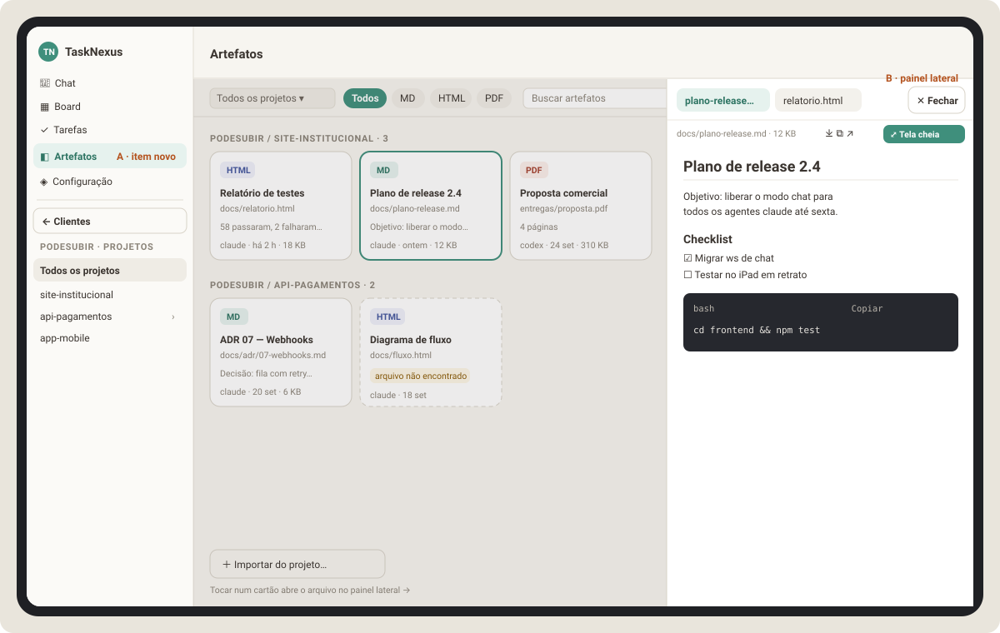

Parte 7 de 8
Parte 7 — Planejamento da Fase A: aba Artefatos por cliente e projeto
O pedido: uma aba Artefatos, como a galeria de artefatos do Claude, organizada por cliente e projeto, listando os artefatos criados (
.md,.html). Ao tocar num artefato, ele abre no painel lateral de visualização de arquivo. Sem mexer no layout: tudo em cima do layout v2 atual.Depende da Fase V (Parte 6): reaproveita o
file_access.py, os renderers (Markdown, HTML, código, PDF, binário), oViewerContexte oViewerPanel. Pode ser o PR seguinte ao da Fase V.

Legenda: A item novo Artefatos no menu que já existe (mesma lista
NAV_ITEMS de Chat, Board, Tarefas e Configuração) · B painel lateral
de visualização, por cima da tela e com abas, com os botões Baixar, Copiar,
Abrir no navegador, Tela cheia e ✕ Fechar.
7.1 Requisitos
| # | Requisito | Origem |
|---|---|---|
| A1 | Nova aba Artefatos no menu do layout atual | Bruno |
| A2 | Organizada por cliente e projeto, usando o mesmo filtro das telas Board e Tarefas | Bruno |
| A3 | Lista os artefatos criados: .md, .pdf, .html |
Bruno |
| A4 | Tocar num artefato abre o painel lateral de visualização | Bruno |
| A5 | Não mudar o layout: nada de redesenho, só uma tela nova no casco v2 | Bruno |
| A6 | Artefato não some quando a conversa acaba: a lista é permanente por projeto | Equipe (é o que faz a galeria ser útil) |
| A7 | Remover da lista não apaga o arquivo do disco | Equipe (segurança) |
Interpretações adotadas (confirmar)
| Ponto | Adotado | Alternativa |
|---|---|---|
| O que vira artefato | (1) O agente publica com a tool nova publicar_artefato. (2) Todo .md/.html/.pdf que o agente abre com abrir_no_visualizador entra automaticamente. (3) Você adiciona à mão ("Salvar em Artefatos" no visualizador ou "Importar do projeto") |
Só a publicação explícita (desligar o item 2 com um parâmetro) |
| "Painel lateral" | O mesmo painel à direita do chat (Fase V + Fase N): encaixado em telas ≥ 1100 px (a sidebar vira trilho enquanto ele está aberto), por cima em 641–1099 px, tela cheia no celular | — (decidido com a Parte 8) |
| Tela cheia no painel lateral | Mantida: o botão ⤢ vira o mesmo modal de tela cheia da Fase V | — |
| Celular | Abre direto em tela cheia (não há largura para drawer) | — |
Outros tipos (imagem, .docx, .csv) |
Fora por enquanto; a tabela aceita qualquer kind, então dá para ampliar depois |
Incluir imagens já |
7.2 Experiência de uso (UX)
Onde fica
- Menu lateral (
SidebarV2) e menu do celular (MobileMenuScreen) ganham o item ◧ Artefatos, entre Tarefas e Configuração. É só uma entrada a mais emNAV_ITEMS; a sidebar, a topbar e a lista de clientes continuam iguais. - Título da topbar: "Artefatos".
- Cliente e projeto vêm da sidebar (Fase N, Parte 8):
a lista de clientes vira a lista de projetos do cliente, com ← Clientes
para voltar. A tela mantém a barra de selects (
ClienteProjetoFilterBar, igual ao Board e a Tarefas), partindo da seleção da sidebar e agindo só na tela; ao lado dela ficam os chips de tipo e a busca (Parte 8, item 5 de 8.2.1).
A tela
- Barra de filtro (mesma linha do filtro de cliente/projeto): chips de tipo Todos · MD · HTML · PDF, campo Buscar (título, caminho e descrição) e ordenação Recentes / Nome.
- Lista agrupada: um grupo por projeto com o rótulo
CLIENTE / PROJETO · N. Com um projeto específico escolhido, os grupos somem e fica só a grade. - Cartão do artefato (mesma linguagem visual do Board, tokens
--v2-*): - selo do tipo (MD verde, HTML índigo, PDF avermelhado); - título (do agente, ou o primeiro# títulodo.md, ou o<title>do HTML, ou o nome do arquivo); - caminho relativo ao projeto; - trecho de até 2 linhas (1º parágrafo do.md,meta descriptiondo HTML, "N páginas" do PDF quando der para ler, senão nada); - rodapé: quem criou (claude, codex, você) · quando · tamanho. - Tocar no cartão abre o painel lateral com o artefato numa aba (ou foca a aba, se já estiver aberto). Tocar em outro cartão abre outra aba no mesmo painel.
- Menu "⋯" do cartão (ou toque longo): Abrir · Baixar · Copiar caminho ·
Citar no chat (cola o caminho no terminal da conversa ativa, com o
mesmo
POST /api/sessions/{sk}/pastedo "Usar no chat" dos Anexos) · Renomear · Remover da lista (confirmação de 2 toques, como nos Anexos). - Importar do projeto… (fim da lista): abre um modal (
CenteredModal) com os.md/.html/.pdfencontrados no projeto escolhido que ainda não são artefatos, com caixas de seleção. Serve para trazer o que já existe hoje.
Estados
| Estado | O que aparece |
|---|---|
| Nenhum artefato no filtro | "Nenhum artefato aqui ainda. Quando um agente criar um relatório, documento ou PDF, ele aparece nesta tela. Você também pode Importar do projeto." |
| Carregando | 6 cartões esqueleto |
| Arquivo apagado ou movido | Cartão com borda tracejada e selo "arquivo não encontrado"; abrir mostra o aviso; ações: Remover da lista |
| Arquivo alterado depois de publicado | Data "atualizado há X" (usa o mtime real) |
| Erro ao carregar | "Não consegui carregar os artefatos. Tentar de novo" |
Painel lateral
- Painel à direita, igual ao do chat: encaixado em telas ≥ 1100 px (a grade de cartões encolhe e a sidebar vira trilho enquanto ele está aberto), por cima da lista em 641–1099 px, tela cheia no celular.
- Cabeçalho: abas dos artefatos abertos · ✕ Fechar. Barra: caminho, tamanho, ⤓ Baixar, ⧉ Copiar, ↗ Abrir no navegador, ⤢ Tela cheia.
- Fecha com ✕, com Esc ou tocando na faixa escurecida. As abas continuam guardadas para quando reabrir.
- Conteúdo: o mesmo
ViewerPanelda Fase V (Markdown como no GitHub, HTML emiframesandbox, PDF, código).
7.3 Arquitetura (TL)
| Decisão | Escolha | Por quê |
|---|---|---|
| Onde guardar | Tabela nova artifacts no sessions.db, um registro por (projeto, caminho) |
A galeria é permanente e por projeto; não pode depender da sessão nem do limite de 15 abas do visualizador |
| Como o agente publica | Tool publicar_artefato no mesmo servidor MCP escritorio-visualizador da Fase V |
Um processo a menos, e a mesma rota de callback |
| Publicação automática | abrir_no_visualizador de .md/.html/.pdf faz upsert em artifacts |
É exatamente o que o agente mostra como entregável; evita depender do agente lembrar de duas tools |
| Como servir o arquivo | Rotas por artifact_id (/api/artifacts/{id}/content e /f/{caminho}) sobre um módulo comum file_serving.py, o mesmo usado pelas rotas /api/viewer/{item_id}/… |
Uma única implementação de CSP, download, limite de 1 MB e denylist |
| Visualizador no front | ViewerContext ganha escopos: session:<session_key> (chat, Fase V) e artefatos (esta tela). Cada item diz sua origem (viewer ou artifact), e o viewerApi monta a URL certa |
O ViewerPanel e os renderers ficam iguais; só muda de onde vem o arquivo |
| Contêiner lateral | Os mesmos ViewerDock/ViewerDrawer/ViewerFullscreen da Fase V, escolhidos pela largura |
Um único comportamento de visualizador no app inteiro |
| Segurança | Mesmas regras da Fase V: resolve_safe_path, denylist, iframe sem allow-same-origin, CSP sandbox, ids aleatórios |
A galeria não amplia o que pode ser lido: só arquivos registrados + vizinhos do mesmo projeto |
Ajuste na Fase V: as funções de servir conteúdo (content e f/) devem nascer num módulo
backend/app/file_serving.py recebendo (project_root, rel_path, download),
para esta fase reaproveitar sem copiar. A Parte 6 foi atualizada com essa nota.
7.4 Backend (Dev)
7.4.1 Arquivos
backend/app/artifact_store.py # NOVO: ArtifactStore (tabela artifacts)
backend/app/artifacts_api.py # NOVO: APIRouter das rotas 7.4.3
backend/app/artifact_meta.py # NOVO: título, trecho e páginas (md/html/pdf), só stdlib
backend/app/file_serving.py # criado na Fase V; aqui só é reaproveitado
backend/app/mcp_viewer_adapter.py # ALTERAR: + tool publicar_artefato
backend/app/viewer_api.py # ALTERAR: abrir_no_visualizador faz upsert em artifacts (md/html/pdf)
backend/app/main.py # ALTERAR: iniciar ArtifactStore no lifespan, include_router,
# + env ESCRITORIO_HOOK_ARTIFACT_PUBLISH_URL no servidor MCP
backend/tests/test_artifact_store.py
backend/tests/test_artifacts_endpoints.py
backend/tests/test_artifact_meta.py
backend/tests/test_mcp_viewer_adapter.py # ALTERAR: casos da tool nova
7.4.2 Tabela
CREATE TABLE IF NOT EXISTS artifacts (
artifact_id TEXT PRIMARY KEY, -- "af_" + token_urlsafe(16)
project_id TEXT NOT NULL, -- ex.: "podesubir/site-institucional"
cliente_id TEXT NOT NULL, -- 1º segmento do project_id (mesma regra de agent_discovery)
path TEXT NOT NULL, -- relativo à raiz do projeto, com "/"
kind TEXT NOT NULL, -- markdown | html | pdf
title TEXT NOT NULL,
description TEXT,
excerpt TEXT, -- até 200 caracteres
size INTEGER,
mtime REAL,
created_by TEXT NOT NULL, -- 'agent' | 'user'
agent_label TEXT, -- "claude", "codex"… (do agente da sessão)
session_key TEXT, -- sessão que criou (pode ficar órfã; é só informativo)
created_at REAL NOT NULL,
updated_at REAL NOT NULL,
UNIQUE(project_id, path)
);
CREATE INDEX IF NOT EXISTS ix_artifacts_cliente ON artifacts(cliente_id, updated_at);
Mesmo padrão de store dos outros: aiosqlite, WAL, busy_timeout=5000.
Upsert por (project_id, path): publicar de novo o mesmo arquivo atualiza
título (se veio), descrição, trecho, tamanho, mtime e updated_at, e mantém o artifact_id.
7.4.3 Rotas
| Rota | Uso | Resposta |
|---|---|---|
GET /api/artifacts?cliente_id=&projeto_id=&tipo=&q=&ordem=recentes |
lista da tela | {"artifacts":[Artifact…]}; projeto_id inclui a subárvore (prefixo projeto_id/, mesma regra do collectSubtreeIds do front); cada item traz exists e mtime atuais (checagem em lote com os.stat em thread) |
GET /api/artifacts/{id} |
um artefato | Artifact |
POST /api/artifacts |
você adiciona | corpo {"project_id","caminho","titulo"?,"descricao"?} → Artifact (201) ou 400/403/404 com mensagem |
POST /api/artifacts/import |
"Importar do projeto" | corpo {"project_id","caminhos":[…]} → {"created":n,"artifacts":[…],"errors":[{caminho,erro}]} |
GET /api/projects/{project_id:path}/artifact-candidates |
lista do modal de importação | {"candidates":[{"path","kind","size","mtime"}],"truncated":bool}: até 300 arquivos .md/.html/.htm/.pdf, ignorando as mesmas pastas da Parte 1 (.git, node_modules, .venv*, dist, build, .escritorio…) e os que já são artefatos |
PATCH /api/artifacts/{id} |
renomear / descrição | {"titulo"?,"descricao"?} → Artifact |
DELETE /api/artifacts/{id} |
remover da lista | {"status":"removed"}; não apaga o arquivo |
GET /api/artifacts/{id}/content |
conteúdo para o painel | igual ao /api/viewer/{item_id}/content (via file_serving) |
GET /api/artifacts/{id}/f/{file_path:path}[?download=1] |
HTML, PDF, assets relativos, download | igual ao /api/viewer/{item_id}/f/… (via file_serving) |
POST /api/hooks/artifacts/publish |
só o adapter MCP (loopback) | corpo {"claude_session_id","caminho","titulo"?,"descricao"?,"abrir"?} → {"success":true,"artifact":{…},"opened":bool} ou {"success":false,"error":"…"} |
Formato de Artifact:
{
"artifact_id": "af_Qm1Y0oHq3a1bXw5Jc2k0q8",
"project_id": "podesubir/site-institucional",
"cliente_id": "podesubir",
"path": "docs/relatorio.html",
"kind": "html",
"title": "Relatório de testes",
"description": null,
"excerpt": "58 passaram, 2 falharam…",
"size": 18432,
"mtime": 1727650000.1,
"exists": true,
"created_by": "agent",
"agent_label": "claude",
"created_at": 1727650000.2,
"updated_at": 1727650000.2
}
Regras:
- Tipos aceitos:
.md,.markdown,.html,.htm,.pdf. Outro tipo → erro legível ("Artefatos aceitam .md, .html e .pdf"). caminhopassa porresolve_safe_path(Fase V) e pela denylist.publicar_artefatocomabrir=true(padrão) também cria/foca a aba no visualizador da sessão, reaproveitando a lógica doabrir_no_visualizador(inclui o frameviewer_open).agent_label: do agente resolvido pelasession_key(agent.iaou nome do cadastro); paracreated_by='user',null.
7.4.4 artifact_meta.py (só biblioteca padrão)
- Markdown: título = primeira linha
# …; trecho = primeiro parágrafo de texto (sem markdown básico:*,_,`, links[x](y)→x), até 200 caracteres. - HTML: título = conteúdo de
<title>; trecho =<meta name="description">ou o texto do primeiro<p>(html.parserda stdlib), sem executar nada. - PDF: título = nome do arquivo; "N páginas" contando
/Type /Page(não/Pages) nos bytes, só se o arquivo tiver até 20 MB; senão, sem trecho. É heurística: se falhar, fica sem trecho, nunca dá erro. - Ler no máximo 256 KB de cada arquivo para extrair metadados.
7.4.5 Tool MCP publicar_artefato
{
"name": "publicar_artefato",
"description": "Publica um arquivo como ARTEFATO do projeto na aba Artefatos do TaskNexus (organizada por cliente e projeto) e, por padrão, abre no visualizador do usuário. Use ao terminar um entregável que o usuário vai querer reencontrar depois: relatórios e páginas .html, documentos, planos e especificações .md, e arquivos .pdf. Se o arquivo já foi publicado, as informações são atualizadas. Arquivos .md, .html e .pdf abertos com abrir_no_visualizador também são publicados automaticamente.",
"inputSchema": {
"type": "object",
"properties": {
"caminho": {"type": "string", "description": "Caminho do arquivo .md, .html ou .pdf, relativo à raiz do projeto ou absoluto dentro dele."},
"titulo": {"type": "string", "description": "Opcional. Título do artefato. Padrão: título do documento ou nome do arquivo."},
"descricao": {"type": "string", "description": "Opcional. Uma frase dizendo o que é o artefato."},
"abrir": {"type": "boolean", "description": "Opcional. Abre no visualizador do usuário. Padrão: true."}
},
"required": ["caminho"]
}
}
Respostas em texto para o agente: Artefato publicado em Artefatos › podesubir / site-institucional: "Relatório de testes" (docs/relatorio.html).,
… (já existia, foi atualizado). ou a mensagem de erro do backend.
7.5 Frontend (Dev)
7.5.1 Arquivos
frontend/src/features/artifacts/
ArtefatosV2.jsx # a tela: filtro cliente/projeto + chips + busca + grade/grupos + importar
ArtifactCard.jsx # cartão (selo de tipo, título, caminho, trecho, rodapé, menu ⋯)
ArtifactActionsMenu.jsx # Abrir, Baixar, Copiar caminho, Citar no chat, Renomear, Remover (2 toques)
ImportArtifactsModal.jsx # CenteredModal com a lista de candidatos e caixas de seleção
useArtifacts.js # busca, filtros, recarga ao focar a tela e ao chegar viewer_open de md/html/pdf
artifactsApi.js
frontend/src/features/viewer/
ViewerDock.jsx / ViewerDrawer.jsx # já existem (Fase V); aqui só recebem scope="artefatos"
ViewerContext.jsx # ALTERAR: escopos (session:<sk> e 'artefatos') e item.source ('viewer'|'artifact')
viewerApi.js # ALTERAR: URLs por origem
ViewerToolbar.jsx # ALTERAR: "☆ Salvar em Artefatos" quando o item veio do chat e ainda não é artefato
frontend/src/layouts/v2/AppV2.jsx # ALTERAR: NAV_ITEMS + SCREEN_TITLES + render de ArtefatosV2
7.5.2 Integração no AppV2 (só isto muda no casco)
const NAV_ITEMS = [
{ id: 'chat', label: 'Chat', icon: '💬' },
{ id: 'board', label: 'Board', icon: '▦' },
{ id: 'tarefas', label: 'Tarefas', icon: '✓' },
{ id: 'artefatos', label: 'Artefatos', icon: '◧' }, // novo
{ id: 'agentes', label: 'Configuração', icon: '◈' },
];
const SCREEN_TITLES = { chat: 'Chat', board: 'Board', tarefas: 'Tarefas', artefatos: 'Artefatos', agentes: 'Configuração' };
{v2Screen === 'artefatos' && (
<ArtefatosV2 projects={projects} selectedClienteId={selectedClienteId} activeSessionKey={activeSessionKey} />
)}
Mesmas props que BoardV2 e TarefasV2 recebem. MobileMenuScreen já
recebe NAV_ITEMS, então o item aparece no celular sem mudança extra.
Conferir testes que contam itens de navegação (AppV2.test.jsx,
SidebarV2.test.jsx, MobileMenuScreen.test.jsx, NavTabs) e atualizar.
7.5.3 Filtro
Usar useClienteProjetoFilter(projects, selectedClienteId, selectedProjetoId) e
ClienteProjetoFilterBar exatamente como BoardV2/TarefasV2 depois da Fase N. A filtragem
por subárvore do projeto pode ser feita no backend (projeto_id) ou no front
com collectSubtreeIds; escolher uma e testar o caso de 3 níveis
(cliente/projeto/sub), que já quebrou no Board.
7.5.4 Painel lateral
- Mesmo painel da Fase V, escolhido pela largura:
ViewerDock(≥ 1100 px, com recolhimento forçado da sidebar, Parte 8),ViewerDrawer(641–1099 px) ouViewerFullscreen(celular), sempre comscope="artefatos". - ⤢ Tela cheia usa o
ViewerFullscreen; ✕ Fechar e Esc fecham o painel. - Tocar num cartão:
openArtifact(artifact)→ adiciona/foca a aba no escopoartefatose abre o painel. - As abas do escopo
artefatosficam só no front (não precisam de tabela): até 15, guardadas emsessionStoragepara sobreviver a recarregar a página.
7.5.5 Atualização da lista
- Ao entrar na tela e ao voltar o foco para a aba do navegador.
- Quando chegar um frame
viewer_opende.md/.html/.pdf(qualquer sessão): marca a lista como "desatualizada" e recarrega se a tela estiver aberta. - Sem polling contínuo.
7.6 Ordem de execução (um commit por passo)
| Passo | Entrega | Verificação |
|---|---|---|
| 1 | artifact_meta.py + testes |
pytest tests/test_artifact_meta.py |
| 2 | ArtifactStore + rotas de lista, criação, edição, remoção, conteúdo e arquivo (via file_serving) |
pytest tests/test_artifact_store.py tests/test_artifacts_endpoints.py |
| 3 | Candidatos + importação | testes de endpoint |
| 4 | Tool publicar_artefato + publicação automática no abrir_no_visualizador |
pytest tests/test_mcp_viewer_adapter.py tests/test_viewer_endpoints.py |
| 5 | ViewerContext com escopos; painel com scope="artefatos" |
vitest |
| 6 | ArtefatosV2 + cartão + filtros + estados + item de menu |
vitest + testes de navegação atualizados |
| 7 | Menu do cartão (baixar, copiar, citar no chat, renomear, remover) e "Salvar em Artefatos" no visualizador | vitest |
| 8 | Modal "Importar do projeto" | vitest |
| 9 | Aceite manual no iPad e atualização da doc | checklist 7.7 |
7.7 Testes e aceite
Backend
- Upsert por
(project_id, path)mantém oartifact_ide atualiza os campos. - Filtros:
cliente_id;projeto_idcom subárvore de 3 níveis;tipo;qem título, caminho e descrição; ordem. exists:falsequando o arquivo some;DELETEnão apaga o arquivo.- Tipos não aceitos, caminho fora do projeto e denylist → erro legível.
- Candidatos ignoram
node_modules/.git/etc., os já publicados, e cortam em 300. publicar_artefatovia hook: sessão inexistente, sucesso comabrir=true(gera frameviewer_open) eabrir=false.abrir_no_visualizadorde.mdcria artefato; de.pynão cria.artifact_meta: título e trecho de.mde.html; PDF com e sem contagem de páginas.
Frontend
ArtefatosV2: agrupa por projeto com "Todos os projetos"; mostra grade simples com projeto escolhido; chips de tipo filtram; busca filtra; estado vazio.- Cartão com
exists:falsemostra o selo e a borda tracejada. - Tocar no cartão abre o painel à direita com a aba; tocar em outro abre a segunda aba.
- Remover exige 2 toques e chama
DELETE. - Item "Artefatos" aparece na sidebar e no menu do celular.
Aceite manual (iPad)
- Pedir ao claude: "gere um relatório HTML dos testes e publique como artefato". Ele aparece em Artefatos › cliente › projeto e abre no visualizador.
- Escolher outro cliente na sidebar: a lista muda. Entrar no cliente e escolher um projeto na sidebar: só aquele projeto (e subprojetos).
- Tocar em dois cartões: painel lateral com duas abas; ⤢ Tela cheia e ✕ Fechar funcionam.
- Abrir um PDF: aparece no painel (ou, se o Safari do iPad não renderizar bem dentro do painel, o botão ↗ abre no leitor nativo e ⤓ baixa. Registrar o resultado no PR).
- "Importar do projeto…" traz um
.mdantigo. - Apagar o arquivo no disco: o cartão mostra "arquivo não encontrado".
- "Citar no chat" cola o caminho no terminal da conversa ativa sem enviar.
- No celular: item no menu, lista em uma coluna, abrir vai para tela cheia.
7.8 Riscos
| Risco | Mitigação |
|---|---|
Lista poluída por arquivos que o agente só abriu para mostrar (ex.: README.md) |
"Remover da lista" com 2 toques; se incomodar, desligar a publicação automática e deixar só publicar_artefato |
PDF dentro de iframe no Safari do iPad às vezes mostra só a primeira página |
Botões ↗ (leitor nativo) e ⤓ sempre visíveis; se necessário, usar pdf.js numa fase futura |
| Muitos artefatos (centenas) | Paginação simples no endpoint (limit/offset, 100 por página) se passar de 300 |
| Sem autenticação ainda | Mesma superfície da Fase V (arquivos registrados + vizinhos do projeto, com denylist); a F0 fecha o resto |
7.9 Definição de pronto
-
pytestenpm testverdes, com os testes novos. - Nenhuma mudança visual fora da tela nova, do item de menu e do painel lateral.
- Aceite manual 7.7 conferido (itens de aparelho marcados como "verificar" se o agente não tiver iPad).
- README do projeto com uma seção curta "Artefatos".
- Documentação atualizada se a implementação divergir.
7.10 Como ficou implementado (backend)
A Fase A foi dividida como a V: backend (passos 1 a 4 da tabela 7.6, esta seção) e frontend (passos 5 a 9). Onde o código diverge do que está acima, vale o código.
7.10.1 Arquivos
| Arquivo | O que faz |
|---|---|
backend/app/artifact_meta.py |
artifact_kind_for, extract_meta (título e trecho de md/html, "N páginas" de PDF), markdown_meta, html_meta, pdf_page_count. Só stdlib, nunca levanta |
backend/app/artifact_store.py |
ArtifactStore (tabela artifacts, upsert por projeto + caminho, filtros, edição, remoção) |
backend/app/artifacts_api.py |
ArtifactService (publicar, listar com estado atual do disco, candidatos, importação, publicação automática) e create_artifacts_router(service) com todas as rotas de 7.4.3 |
backend/app/viewer_api.py |
create_viewer_router(service, on_agent_open=None): callback chamado só quando o agente abre um arquivo pelo hook |
backend/app/mcp_viewer_adapter.py |
+ tool publicar_artefato (nome, descrição e schema idênticos a 7.4.5) |
backend/app/main.py |
artifact_store no lifespan, _agent_label_for_session, artifact_service, include_router, env ESCRITORIO_HOOK_ARTIFACT_PUBLISH_URL no servidor escritorio-visualizador |
backend/tests/test_artifact_meta.py, test_artifact_store.py, test_artifacts_endpoints.py |
Novos |
backend/tests/test_mcp_viewer_adapter.py, test_websocket.py, test_hook_loopback_listener.py |
Tool nova e a URL nova nos testes de contrato do spawn (claude e codex) |
7.10.2 Divergências e decisões tomadas na implementação
| # | Ponto | Especificação | Como ficou | Por quê |
|---|---|---|---|---|
| 1 | Coluna title_custom |
Não existia | Coluna interna (INTEGER, fora da resposta). 1 quando o título veio de alguém (agente com titulo, usuário no PATCH). Com 0, cada nova publicação troca o título pelo do documento; com 1, título automático nunca sobrescreve |
O agente reescreve o # título do .md e a galeria acompanha; um nome escolhido não some quando o agente reabre o arquivo |
| 2 | Upsert | "atualiza título (se veio), descrição, trecho, tamanho, mtime e updated_at" | Igual, e kind também. created_by, agent_label, session_key e created_at ficam os de quem criou |
O cartão continua dizendo "você" se o usuário importou e o agente só reabriu |
| 3 | POST /api/artifacts |
201 |
201 quando nasce, 200 quando já era artefato (atualizado, mesmo artifact_id) |
A tela sabe se foi "salvo" ou "já estava" |
| 4 | Formato Artifact |
Com exists e mtime atuais |
Igual, sem session_key (é só informativo). size também é o atual. Arquivo sumido: exists:false e mtime/size da última publicação. Toda resposta que devolve Artifact (lista, GET, POST, PATCH, import, hook) traz o estado atual |
Um formato só para a tela |
| 5 | Checagem de existência | os.stat em lote |
Em lote numa thread, mas por resolve_safe_path: um arquivo trocado por link para fora do projeto (ou que caiu na denylist) aparece como exists:false, igual ao que f/ responderia |
Coerência com a rota que serve o arquivo |
| 6 | Erros das rotas JSON | "400/403/404 com mensagem" | {"success": false, "error": "…"} com o status HTTP (400/403/404), como a rota do usuário do visualizador (6.10.2, item 8). content e f/ respondem {"detail": "…"}, iguais às do visualizador. caminho vazio é 400 (no visualizador vira 403) |
A tela trata content/f/ de aba e de artefato com o mesmo código |
| 7 | ?tipo= |
tipo |
Aceita md/markdown, html/htm, pdf, vazio ou todos (sem filtro); outro valor → 400 "Tipo inválido. Use md, html ou pdf." |
Os chips dizem MD/HTML/PDF, o kind gravado é markdown |
| 8 | ?ordem= |
recentes |
recentes (padrão) ordena pelo maior entre updated_at e o mtime atual, decrescente; nome ordena pelo título sem acento e sem caixa; outro valor → 400 "Ordem inválida. Use recentes ou nome." |
Arquivo alterado depois de publicado sobe na lista, coerente com "atualizado há X" (7.2) |
| 9 | ?q= |
"em título, caminho e descrição" | Igual, sem acento e sem caixa ("relatorio" acha "Relatório"), filtrado em Python | O LIKE do SQLite só ignora caixa em ASCII; no iPad digitar acento é lento |
| 10 | ?projeto_id= |
Subárvore por prefixo | project_id = X OR project_id LIKE 'X/%' com _ e % escapados |
cliente_projeto_1 tem _, que é curinga no LIKE |
| 11 | Candidatos | Ignorar .git, node_modules, .venv*, dist, build, .escritorio… |
Ignora toda pasta oculta (.git, .claude, .escritorio, .venv*, .next…) e node_modules, __pycache__, dist, build, venv, site-packages, coverage, htmlcov; também subpastas que são projetos (têm .claude/, .gemini/ ou .codex/), arquivos da denylist, arquivos ocultos e links para fora. Ordem alfabética estável; corta em 300 com truncated:true |
No cliente-como-projeto (podesubir com podesubir/site dentro), o README do site é candidato de podesubir/site; sem isso o mesmo arquivo viraria dois artefatos |
| 12 | Importação | {"created","artifacts","errors"} |
created conta só os novos; artifacts traz todos os que deram certo (novos e atualizados); máximo 300 caminhos por pedido (400); um caminho ruim não derruba os outros |
— |
| 13 | Tipo aceito | Pela extensão | Checado duas vezes: no nome pedido (um app.py recebe "Artefatos aceitam .md, .html e .pdf" mesmo se não existir) e no arquivo real depois do resolve_safe_path (link notas.md → x.py é recusado) |
— |
| 14 | Resposta do hook | {"success","artifact","opened"} |
Mais "created" (o adaptador escreve "já existia, foi atualizado") e "delivered" (a tela recebeu o viewer_open). abrir aceita "false"/"0"/"não" em texto |
Alguns modelos mandam booleano como texto |
| 15 | Hook fora do loopback | — | 403 {"success":false,"error":"O hook de artefatos só aceita chamadas da própria máquina."}, mesma regra do visualizador (hook_request_allowed, liberado com HOOK_CALLBACK_BASE_URL) |
— |
| 16 | abrir=true |
"reaproveitando a lógica do abrir_no_visualizador" |
Chama o mesmo ViewerService.open_path (aba gravada, reaproveitada pelo caminho, limite de 15, frame viewer_open). Se a abertura falhar, a publicação vale e opened:false |
— |
| 17 | Publicação automática | "abrir_no_visualizador faz upsert" |
Callback on_agent_open no hook /api/hooks/viewer/open, depois da aba gravada. O titulo do abrir_no_visualizador não vira título do artefato (é o rótulo curto da aba); vale o título do documento. Falha aqui nunca vira erro para o agente (só log). Abertura pelo usuário e a abertura feita pelo próprio publicar_artefato não passam pelo hook, então não publicam (nem duplicam) |
Mantém o ViewerService sem saber de artefatos |
| 18 | agent_label |
"agent.ia ou nome do cadastro" |
ia do agente do cadastro global escolhido como em _resolve_agent (o agent_id da session_key, senão o padrão, senão o primeiro), lido do cache em memória; sem agente resolvido, o próprio agent_id da chave (ex.: claude); null para created_by='user' |
Não varrer PROJECTS_ROOT a cada publicação |
| 19 | Leitura de metadados | "no máximo 256 KB" | 256 KB para .md/.html; PDF lê o arquivo inteiro só até 20 MB (a contagem precisa dos objetos de página espalhados) |
Regra de 7.4.4 para PDF |
| 20 | Metadados de Markdown/HTML | Básico | Markdown pula front matter YAML, blocos de código, tabelas, réguas e comentários; aceita título setext (Título\n===); _ só sai na borda de palavra (meu_modulo.py fica). HTML aceita também og:description e ignora <script>/<style>/<template> |
Trechos legíveis em docs reais |
| 21 | PATCH |
{"titulo"?,"descricao"?} |
titulo vazio → 400 "O título não pode ficar vazio."; descricao null ou "" apaga a descrição; renomear marca o título como explícito (item 1) |
— |
| 22 | Paginação | Se passar de 300 (7.8) | Não implementada: a lista devolve tudo | Sem necessidade medida ainda |
Ficaram como especificado: tabela e índice de 7.4.2 (mais a coluna do
item 1); ids af_ + token_urlsafe(16); UNIQUE(project_id, path); mesmo
padrão de store (aiosqlite, WAL, busy_timeout=5000, asyncio.Lock criado
no initialize()); cliente_id pela regra de cliente_id_from_projeto_id;
DELETE não apaga o arquivo; content e f/ pelo file_serving sem cópia
(CSP, nosniff, no-store, download, denylist, limite de 1 MB); artefatos
sobrevivem ao terminate da sessão; tool publicar_artefato no servidor
escritorio-visualizador com nome, descrição e schema de 7.4.5 e os textos de
resposta; env ESCRITORIO_HOOK_ARTIFACT_PUBLISH_URL registrada em
_escritorio_mcp_servers (vale para claude e codex); todo acesso a disco
em asyncio.to_thread.
7.10.3 Contratos para o frontend da Fase A
Artifact (resposta real do teste ponta a ponta):
{
"artifact_id": "af_uCL93UtU8HSXSsMfmzTMFw",
"project_id": "cliente-x/site",
"cliente_id": "cliente-x",
"path": "docs/relatorio.html",
"kind": "html",
"title": "Relatório E2E",
"description": "Relatório do E2E",
"excerpt": "Tudo passou.",
"size": 125,
"mtime": 1790825033.0571904,
"created_by": "agent",
"agent_label": "claude",
"created_at": 1790825100.2932432,
"updated_at": 1790825100.2932432,
"exists": true
}
kind:markdown | html | pdf.created_by:agent | user.excerpt: até 200 caracteres ounull; PDF:"1 página"/"N páginas"ounull.mtime/size: do disco agora (seexists), senão da última publicação.
Rotas
| Rota | Sucesso | Erros |
|---|---|---|
GET /api/artifacts?cliente_id=&projeto_id=&tipo=&q=&ordem= |
200 {"artifacts":[Artifact…]} |
400 tipo/ordem inválidos |
GET /api/artifacts/{id} |
200 Artifact |
404 {"success":false,"error":"Artefato não encontrado"} |
POST /api/artifacts {"project_id","caminho","titulo"?,"descricao"?} |
201 Artifact (novo) ou 200 Artifact (já existia) |
400 corpo/caminho/tipo, 403 fora do projeto/protegido, 404 projeto ou arquivo |
POST /api/artifacts/import {"project_id","caminhos":[…]} |
200 {"created":n,"artifacts":[Artifact…],"errors":[{"caminho","erro"}]} |
400 lista vazia/> 300, 404 projeto |
GET /api/projects/{project_id}/artifact-candidates |
200 {"candidates":[{"path","kind","size","mtime"}],"truncated":bool} |
404 projeto |
PATCH /api/artifacts/{id} {"titulo"?,"descricao"?} |
200 Artifact |
400 título vazio, 404 |
DELETE /api/artifacts/{id} |
200 {"status":"removed"} |
404 (tratar como "já removido") |
GET /api/artifacts/{id}/content |
igual a /api/viewer/{item_id}/content, com artifact_id no lugar de item_id |
404 {"detail"} artefato/arquivo/projeto, 403 {"detail"} |
GET /api/artifacts/{id}/f/{caminho}[?download=1] |
igual a /api/viewer/{item_id}/f/… |
403, 404, 400 (pasta) com {"detail"} |
POST /api/hooks/artifacts/publish (só o adaptador) |
200 {"success":true,"artifact","created","opened","delivered"} |
200 {"success":false,"error"}; 403 fora do loopback |
Mensagens de erro: Artefatos aceitam .md, .html e .pdf, Caminho fora do
projeto, Arquivo protegido (segredos não são exibidos), Arquivo não
encontrado: <caminho>, É uma pasta, não um arquivo: <caminho>, Informe o
caminho do arquivo., Informe o projeto (project_id)., Projeto não
encontrado: <id>, Artefato não encontrado, Corpo da requisição inválido.,
O título não pode ficar vazio., Tipo inválido. Use md, html ou pdf.,
Ordem inválida. Use recentes ou nome., Informe a lista de caminhos
(caminhos)., Importe no máximo 300 arquivos por vez.
Para a lista se atualizar sozinha (7.5.5): quando o agente abre um
.md/.html/.pdf, o artefato é gravado antes da resposta do hook, e o
frame viewer_open (com opened_by: "agent") chega no WebSocket do terminal.
O frame não diz se virou artefato: a tela recarrega a lista quando o path
do item termina em .md/.markdown/.html/.htm/.pdf.
Textos que o agente lê (publicar_artefato):
Artefato publicado em Artefatos › cliente-x / site: "Relatório E2E" (docs/relatorio.html).,
… (README.md) (já existia, foi atualizado). ou a mensagem de erro do backend.
7.10.4 Teste ponta a ponta (backend)
Backend real (uvicorn, HOOK_LOOPBACK_PORT ligado) com PROJECTS_ROOT numa
pasta temporária e o projeto cliente-x/site (com .claude/):
- WebSocket em
/ws/pty/cliente-x/site::claude; o--mcp-configdoclaudeno PTY (lido do/proc) traziaESCRITORIO_HOOK_ARTIFACT_PUBLISH_URL = http://127.0.0.1:8766/api/hooks/artifacts/publish. - Adaptador rodando com esse env:
publicar_artefatodedocs/relatorio.htmleREADME.md→ textos de 7.4.5 e três framesviewer_open(o segundo README comreused: true);app.py→ "Artefatos aceitam .md, .html e .pdf";.env.md→ "Arquivo protegido…". - Lista por
cliente_id=cliente-x(2 artefatos), porprojeto_id+tipo=mde porcliente_id=outro(vazia). - Candidatos:
docs/antigo.mdedocs/plano.md(semnode_modules, sem os já publicados); importação dedocs/antigo.md+app.py→ 1 criado e 1 erro. abrir_no_visualizador(pelo adaptador) dedocs/plano.mdcriou artefatoagent/claude; deapp.py, não. Abertura pelo usuário de um.mdnovo não criou.- Apagar
docs/plano.md→exists:false;contentdele →404. f/…?download=1comattachment, CSPsandbox;DELETE→removede o arquivo continuou no disco.- Hook pelo IP da rede →
403. claudereal (2.1.x,claude -pcom o--mcp-configgerado pelo backend): pedindo "publique o README.md como artefato do TaskNexus (aba Artefatos), usando a tool publicar_artefato", o agente chamou a tool e respondeu que o README foi publicado em cliente-x / site (já existia, atualizado). Na primeira tentativa, com o pedido curto "publique o README.md como artefato", oclaudedeste ambiente escolheu a tool de artefatos do próprio claude.ai, que existe aqui e não no PC do Bruno — ver pendências.
7.10.5 Pendências
- Frontend da Fase A (passos 5 a 9 da tabela 7.6), contra os contratos de 7.10.3.
- README do projeto com a seção "Artefatos": junto com a tela.
- Paginação (
limit/offset) só se a lista passar de algumas centenas (7.8). - Permissão da tool no
claudeinterativo: comoabrir_no_visualizador,mcp__escritorio-visualizador__publicar_artefatopode pedir aprovação na primeira chamada (avaliar--allowedToolsno spawn, fora desta fase). - Ambiguidade da palavra "artefato": num
claudeque também tenha tools de artefato do claude.ai, um pedido curto pode ir para a tool errada. No CLI local isso não deve acontecer; se acontecer, citar "do TaskNexus" ou o nome da tool. - Aceite com o
codexreal: coberto pelos testes de contrato do-c mcp_servers.*; falta rodar com o binário. - Regenerar os HTML (
build_html.py) e atualizar oCONTEXTO-PARA-AGENTE.md: fica para o integrador.
7.11 Como ficou implementado (frontend)
O frontend da Fase A entregou os passos 5 a 9 da tabela 7.6 (um commit por passo), contra os contratos reais da 7.10.3. Onde o código diverge do texto acima, vale o código. Backend: nenhuma mudança (não apareceu bug real na integração).
7.11.1 Arquivos
| Arquivo | O que faz |
|---|---|
frontend/src/features/artifacts/ArtefatosV2.jsx |
A tela: barra de filtro (selects + chips + busca + ordem), grupos/grade, estados, painel (Dock/Drawer/Fullscreen com scope="artefatos"), links relativos, menu, renomear, importar |
features/artifacts/ArtifactCard.jsx |
Cartão (selo, título, caminho, trecho, rodapé, "arquivo não encontrado", ⋯, toque longo, botão direito) e o esqueleto |
features/artifacts/ArtifactActionsMenu.jsx |
Menu em portal: Abrir, Baixar, Copiar caminho, Citar no chat, Renomear, Remover (2 toques); placeMenu (embaixo/em cima, dentro da janela) |
features/artifacts/RenameArtifactDialog.jsx |
CenteredModal + PATCH |
features/artifacts/ImportArtifactsModal.jsx |
CenteredModal com projeto, candidatos, "Selecionar todos" e importação |
features/artifacts/useArtifacts.js |
Lista do cliente e quando recarregar (entrar, foco/visibilidade, artifactsSignal) |
features/artifacts/useArtifactTabsStorage.js |
Abas do escopo artefatos em sessionStorage (até 15, try/catch) |
features/artifacts/useSaveToArtifacts.js |
Regra e consulta do "☆ Salvar" no visualizador do chat |
features/artifacts/artifactModel.js |
Regras puras: recorte, busca, ordem, grupos, textos do cartão, links, caminho absoluto |
features/artifacts/artifactsApi.js |
Rotas de 7.10.3 (lista, criar, renomear, remover, candidatos, importar) |
features/artifacts/artifacts.css |
Estilos da tela (só tokens --v2-*, sem transform/filter) |
features/viewer/ViewerContext.jsx |
+ restoreItems, syncItems, artifactsSignal, isArtifactPath |
features/viewer/ViewerPanel.jsx, ViewerDock.jsx, ViewerDrawer.jsx, ViewerFullscreen.jsx |
+ prop onOpenPath (links relativos em escopo local) |
features/viewer/ViewerToolbar.jsx |
+ botão ☆ Salvar |
layouts/v2/AppV2.jsx |
NAV_ITEMS/SCREEN_TITLES + artefatos; viewerOpen soma a superfície artefatos; render de ArtefatosV2 |
layouts/v2/ClienteProjetoFilterBar.jsx |
+ children (controles extras na mesma linha; Board/Tarefas sem mudança) |
| Testes | artifactModel.test.js, ArtefatosV2.test.jsx, ArtifactActions.test.jsx, ImportArtifactsModal.test.jsx; ampliados ViewerContext.test.jsx, ViewerPanel.test.jsx, AppV2.test.jsx, MobileMenuScreen.test.jsx |
README.md |
Seção "Artefatos" e o ☆ Salvar na seção do visualizador |
7.11.2 Divergências e decisões tomadas na implementação
| # | Ponto | Especificação | Como ficou | Por quê |
|---|---|---|---|---|
| 1 | Filtros | "no backend (projeto_id) ou no front; escolher uma" (7.5.3) |
Busca GET /api/artifacts?cliente_id= (ou sem nada em "Todos") uma vez; projeto, tipo, busca e ordem são recortes no front (artifactModel.js), com as MESMAS regras do backend (busca sem acento/caixa, "recentes" pelo maior entre updated_at e mtime, "nome" sem acento). O projeto usa o isInScope da Fase N |
Chips e busca respondem na hora, sem uma requisição por letra no iPad. E o projeto_id do backend não distingue a "Raiz" (só o cliente), que o isInScope já trata. Testado o caso de 3 níveis |
| 2 | Barra de filtro | "mesma linha" dos selects | ClienteProjetoFilterBar ganhou children; quebra de linha natural (flex-wrap) quando não cabe (iPad em pé com painel, celular) |
Reaproveita a barra em vez de copiar; Board e Tarefas não passam children e ficam idênticos |
| 3 | Recolhimento | viewerOpen soma a superfície da tela (6.11.6) |
viewerOpen = (chat aberto e tela Chat) || (artefatos aberto e tela Artefatos); o Dock do chat só é desenhado com o painel do chat aberto na tela Chat |
Cada painel só conta na própria tela. Com os dois abertos, trocar de tela troca qual está encaixado |
| 4 | Versão da aba | — | A aba do artefato usa como updated_at a versão do arquivo (maior entre publicação e mtime); a publicação fica em published_at |
É a chave do cache de conteúdo e o ?v= do iframe/PDF: arquivo alterado no disco sem nova publicação refaz o conteúdo no painel |
| 5 | Abas abertas × lista | — | syncItems: quando a lista recarrega, as abas abertas recebem os dados novos (título renomeado, versão) sem abrir aba nem mexer no painel |
Renomear ou o agente regravar o arquivo reflete no painel |
| 6 | Persistência das abas | sessionStorage (7.5.4) |
restoreItems na 1ª montagem da tela na página (não abre o painel); grava a cada mudança; tudo em try/catch |
Recarregar a página não deve jogar o painel na cara de quem só voltou à tela |
| 7 | Links relativos num artefato | Decidir (6.11.6) | Destino que é artefato já carregado (mesmo projeto e caminho) → outra aba; qualquer outro → aba do navegador com fileUrl do artefato atual (/api/artifacts/{id}/f/<caminho resolvido>); fora do projeto → aviso |
openByPath precisa de sessão. A rota f/ já serve os vizinhos do projeto com as mesmas regras de segurança. Um .md aberto assim aparece como texto puro no navegador; #L10 não destaca linha |
| 8 | Lista desatualizada (7.5.5) | "observar viewer.scopes ou ouvinte" |
Contador artifactsSignal no contexto (sobe em receiveOpen quando o path termina em .md/.markdown/.html/.htm/.pdf); recarga com espera de 300 ms; foco/visibilidade com intervalo mínimo de 2 s |
Sem polling; vários arquivos abertos em sequência viram uma busca |
| 9 | Citar no chat | "cola o caminho" | Cola o caminho absoluto (path do projeto em /api/projects + caminho; no Windows com \), sem \r; desabilitado ("Abra um chat para citar") sem conversa ativa |
O agente ativo pode estar em outro projeto; relativo apontaria para o lugar errado |
| 10 | Copiar caminho | — | Copia o caminho relativo ao projeto | Igual ao ⋯ › Copiar caminho do visualizador |
| 11 | Menu de arquivo sumido | "ações: Remover da lista" | Abrir (mostra o aviso do painel), Copiar caminho, Renomear e Remover; sem Baixar nem Citar | Baixar/Citar dariam 404 |
| 12 | Toque longo | — | 500 ms parado (cancela com mais de 10 px de movimento — rolar a lista), via Pointer Events; o clique ao soltar é ignorado; botão direito também abre; -webkit-touch-callout: none no cartão |
Sem a lupa/seleção do iOS por cima do menu |
| 13 | "☆ Salvar em Artefatos" | "quando o item veio do chat e ainda não é artefato" | Botão ☆ Salvar (rótulo acessível "Salvar em Artefatos") na barra, para abas source: 'viewer' de .md/.markdown/.html/.htm/.pdf; "ainda não é" = não está em GET /api/artifacts?projeto_id=<projeto da aba> (cache de 15 s por projeto, limpo ao salvar). Depois: "★ Salvo" por 1,2 s, aviso "Salvo em Artefatos" (ou "Já estava em Artefatos" no 200) e o botão some |
O que o agente abre desses tipos já vira artefato sozinho; o botão serve ao que você abriu (link, terminal) e ao que foi removido da lista. Rótulo curto porque a barra do painel encaixado tem 420 px |
| 14 | Importar | Candidatos "do projeto escolhido" | O modal tem um select de projeto (os do escopo atual da tela; em "Todos", todos), pré-escolhido com o projeto do filtro (ou o cliente). Sucesso parcial deixa no modal só os que falharam, com o motivo | Importar exige um projeto, e o Bruno pode estar olhando o cliente inteiro |
| 15 | Renomear | — | CenteredModal com o foco no campo de texto (o teclado sobe) |
Quem tocou em "Renomear" quer digitar (o contrato do CenteredModal evita isso só no "Novo chat") |
| 16 | Datas do rodapé | "quando" | "agora", "há 5 min", "há 2 h", "ontem", "há 3 d" e, depois de uma semana, "24 set" (com o ano se não for o atual); "atualizado há X" quando o mtime passou da publicação em mais de 2 s |
7.2, "Arquivo alterado depois de publicado" |
| 17 | Subprojeto na grade | — | Com um projeto escolhido que tem subprojetos, o caminho do cartão de um subprojeto vem prefixado ("v2 · README.md") | Dois README.md não parecem o mesmo arquivo |
| 18 | Celular | "lista em uma coluna, abrir vai para tela cheia" | Igual; a tela cheia só aparece com a tela à vista (não por cima do menu); a busca usa 16 px no celular (o iOS dá zoom em campo menor) | — |
7.11.3 Testes e tamanho
npm test: 94 arquivos, 1635 testes, todos passando (eram 90/1584).
Cobrem os itens "Frontend" de 7.7: agrupa por projeto com "Todos os
projetos"; grade com projeto escolhido (subárvore de 3 níveis e Raiz);
chips, busca sem acento e ordem; estados vazio, carregando (6 esqueletos) e
erro; cartão exists:false com selo e borda tracejada; tocar abre o painel
com a aba e outro cartão abre a segunda; remover exige 2 toques e chama
DELETE; item "Artefatos" na sidebar (entre Tarefas e Configuração) e no menu
do celular; encaixe com a sidebar recolhida sem gravar a preferência, gaveta em
641–1099 px; abas no sessionStorage (e storage bloqueado não quebra);
links relativos; recarga no viewer_open de .md (e não de .py); menu,
citar, renomear, importar e o ☆ Salvar. fixedPositioningInvariant.test.js
continua passando.
npm run build: index-*.js 957,91 kB · gzip 274,00 kB (+8,5 kB gzip sobre a
V-2); index-*.css 31,48 kB · gzip 7,33 kB (+1,4 kB).
7.11.4 Verificação visual
Backend real (uvicorn) com PROJECTS_ROOT temporário: podesubir (com
site-institucional, api-pagamentos e api-pagamentos/v2) e cliente-x
(com site), todos com .claude/; .md, .html com style.css e imagem
vizinhos, um PDF de 4 páginas, um node_modules/ (não aparece nos
candidatos). Os artefatos foram criados por POST /api/artifacts e o
created_by/agent_label/datas ajustados no banco para simular agentes
(claude/codex) e idades diferentes; docs/fluxo.html foi apagado do disco
depois de publicado. Frontend com vite e Playwright/Chromium em
1180×820, 820×1180 e 390×844, em capturas/fase-a/:
| Tela | 1180×820 (encaixado) | 820×1180 (por cima) | 390×844 (tela cheia) |
|---|---|---|---|
| Lista em "Todos" (grupos) | ver | ver | ver |
| Projeto escolhido na sidebar (grade) | ver | ver | ver |
| Cartão "arquivo não encontrado" | ver | ver | ver |
| Painel com o markdown | ver | ver | ver |
| Painel com 2 abas (md + html) | ver | ver | ver |
| ver | ver | ver | |
| Tela cheia | ver | ver | ver |
| Menu do cartão | ver | ver | ver |
| Importar do projeto | ver | ver | ver |
| ☆ Salvar no visualizador do chat | ver · salvo | ver · salvo | — |


Conferido no script (medido, não só olhado): nenhuma rolagem horizontal
(scrollWidth − clientWidth = 0 na página, na lista, na barra de filtro e no
corpo do painel em todas as capturas). Em 1180×820 a sidebar virou trilho com
o painel aberto e voltou ao fechar. O PDF aparece em branco nas capturas
porque o Chromium sem interface não tem leitor de PDF (o mesmo da V-2); ↗ e ⤓
ficam à vista. Na cena do chat, a conversa foi aberta por WebSocket e o
arquivo docs/notas.md aberto por POST /api/sessions/{sk}/viewer (como um
link tocado); a lista de chats aparece vazia porque o teste não criou a
conversa pela tela.
7.11.5 Pendências (verificar no aparelho)
- Toque longo no cartão no Safari do iPad (gesto e ausência da lupa/menu do sistema).
- Baixar pelo menu do cartão no Safari/PWA (Arquivos › Downloads).
- PDF no painel do Safari (só a 1ª página? — ↗ abre no leitor nativo).
- Link relativo de um artefato que não está na lista abre o arquivo cru numa
aba do navegador (um
.mdaparece como texto). Se incomodar, a evolução natural é abrir pela conversa ativa (openByPath) quando houver uma no mesmo projeto. - Paginação da lista (7.8) continua não implementada no backend; a tela busca a lista do cliente inteira.
- Regenerar os HTML (
build_html.py) e atualizar oCONTEXTO-PARA-AGENTE.md: fica para o integrador.